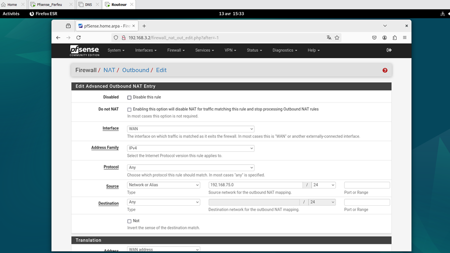
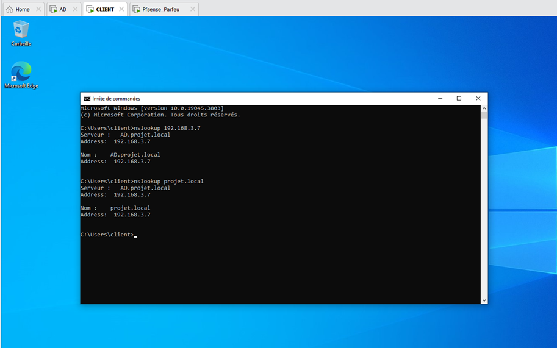

Vue d'ensemble du projet
Ce projet d'intégration consiste en la conception et mise en œuvre d'une infrastructure réseau complète avec segmentation, services centralisés et sécurité avancée. L'infrastructure comprend plusieurs zones réseau isolées avec des services dédiés pour chaque département.
Topologie réseau

Schéma de la topologie réseau avec segmentation par département
Plan d'adressage
Départements
Informatique
192.168.3.0/25 (110 postes)
Ventes
192.168.3.128/26 (32 postes)
Comptabilité
192.168.3.192/27 (20 postes)
Serveurs
Réalisations principales
Active Directory & DHCP
- • Installation Windows Server 2019
- • Configuration domaine projet.local
- • Étendues DHCP par département
- • Gestion utilisateurs et groupes
- • Partages réseau sécurisés
DNS Primaire/Secondaire
- • DNS primaire sur Windows Server
- • DNS secondaire BIND9 sur Debian
- • Zone de résolution directe
- • Enregistrements A pour tous les hôtes
- • Tests de résolution

Systèmes RAID
- • RAID-5 sur Active Directory (3×40GB)
- • RAID-1 sur serveur sauvegarde (2×15GB)
- • Configuration automatique au démarrage
- • Surveillance et monitoring
- • Redondance et haute disponibilité
Serveur Web (DMZ)
- • NGINX sur Debian Linux
- • Configuration SSL/HTTPS
- • Isolation en zone DMZ
- • Règles de pare-feu strictes
- • NAT et redirection de ports
Système de Sauvegarde
- • Duplicati pour sauvegarde automatisée
- • Serveur dédié avec RAID-1
- • Utilisateurs et dossiers par service
- • Sauvegardes programmées
- • Tests de restauration
NTP & Syslog
- • Serveur NTP centralisé
- • Synchronisation tous clients
- • Serveur Syslog avec rsyslog
- • Centralisation des logs
- • Monitoring et surveillance
Sécurité et Pare-feu
Règles par interface
WAN
Tout trafic entrant bloqué par défaut. Seuls HTTP/HTTPS redirigés vers DMZ.
LAN
Accès Internet et services internes autorisés. DMZ interdite.
DMZ
HTTP/HTTPS depuis WAN. Accès sortant restreint.
Tests de connectivité
Configuration des règles de pare-feu pfSense
Captures d'écran du projet
DHCP
Étendues DHCP configurées pour les 3 départements
pfSense Interfaces
Configuration des 4 interfaces réseau
Serveur Web NGINX
Test du serveur web depuis le navigateur
Système RAID
RAID-5 configuré sur Active Directory
Système de Sauvegarde
Duplicati configuré pour sauvegardes automatiques
Test DNS
Résolution DNS fonctionnelle depuis le client
Pare-feu et Sécurité
Redirection de ports et règles de sécurité
Défis rencontrés et solutions
Segmentation réseau
Configuration complexe des VLANs et règles de pare-feu pour isoler les départements tout en maintenant l'accès aux services centralisés.
Redondance DNS
Mise en place d'un DNS secondaire sur Linux pour assurer la continuité du service en cas de panne du serveur primaire.
Haute disponibilité
Configuration RAID-5 sur AD et RAID-1 sur sauvegarde pour garantir la disponibilité des données critiques.
Monitoring centralisé
Synchronisation NTP et centralisation des logs avec Syslog pour faciliter le monitoring et le dépannage.
Compétences développées
Administration Système
- • Windows Server 2019
- • Debian Linux
- • Active Directory
- • Services réseau
Réseau & Sécurité
- • pfSense
- • Segmentation VLAN
- • Règles de pare-feu
- • NAT et redirection
Stockage & Sauvegarde
- • RAID 1 et 5
- • Duplicati
- • Automatisation
- • Stratégies de sauvegarde
Services Web
- • NGINX
- • SSL/TLS
- • MediaWiki
- • IIS